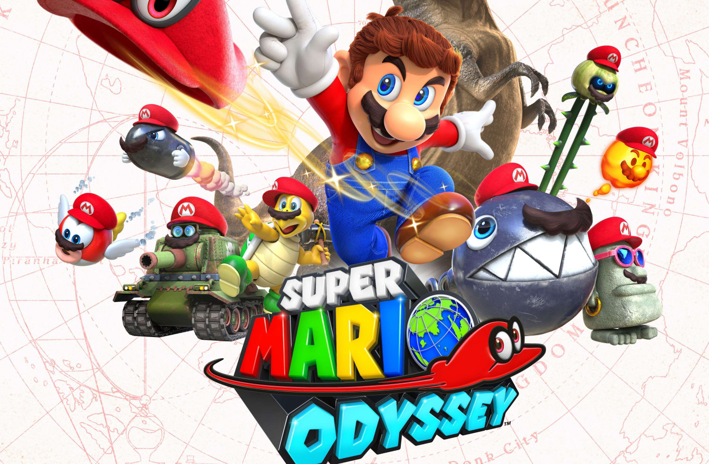

Story
Super Mario Bros., console game created by the Japanese electronic game
manufacturer Nintendo Company, Ltd., in 1985 for the Nintendo Entertainment
System (NES). The game, which was based on the arcade game Mario Bros.,
helped launch one of gaming’s most popular franchises. It stars Mario and
Luigi, two Italian plumbers who find themselves in the Mushroom Kingdom trying
to rescue Princess Toadstool from the evil King Bowser. It is one of the
best-selling game series, with more than 40 million copies sold.

Super Mario 64
Mario was invited by Princess Daisy to her castle to have cake together.
When Mario arrived, he cannot find Princess Daisy... since she was
captured by Bowser! Control Mario with your N64 joystick to collect
Power Stars to rescue Princess Daisy!
Start finding the STARS
Mario Odyssey
Super Mario Odyssey is a 2017 platform game developed and published by
Nintendo for the Nintendo Switch. An entry in the Super Mario series,
it follows Mario and Cappy, a sentient hat that allows Mario to control
other characters and objects, as they journey across various kingdoms to
save Princess Peach from his nemesis Bowser, who plans to forcibly marry
her. In contrast to the linear gameplay of prior entries, the game
returns to the primarily open-ended, 3D platform gameplay featured in
Super Mario 64 and Super Mario Sunshine.

The game was developed by Nintendo's Entertainment Planning & Development
division, and began development soon after the release of Super Mario 3D
World in 2013. Various ideas were suggested during development, and to
incorporate them all, the team decided to employ a sandbox-style of gameplay.
Unlike previous installments such as New Super Mario Bros. and Super Mario
3D World, which were aimed at a casual audience, the team designed Super
Mario Odyssey to appeal to the series' core fans. The game also features a
vocal theme song, "Jump Up, Super Star!", a first for the series.
Super Mario Odyssey received acclaim from critics who called it one of
the best games in the series, with particular praise towards its
inventiveness and originality. It also won numerous awards, including
for game of the year. The game sold over 20 million copies by December
2020, making it one of the best-selling Switch games.